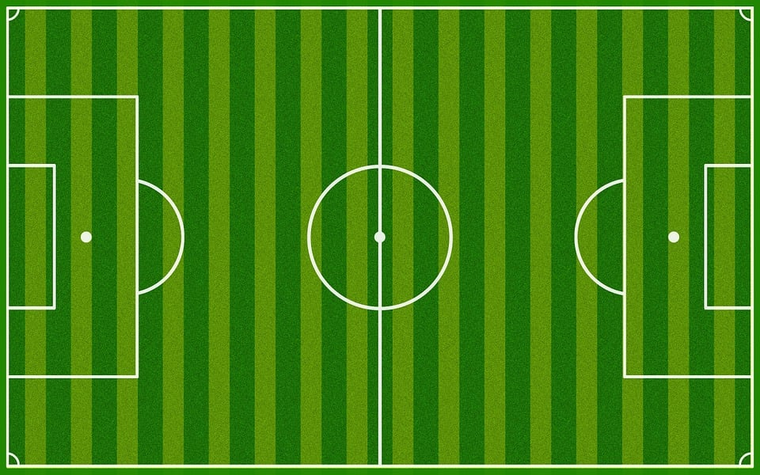

Résultats des championnats européens de football entre 2005 et 2021

Compétences mises en œuvre
Requêtes de base
Utilisation de Common Table Expressions (CTE)
Utilisation de Window Functions
Base de données
La base de données utilisée est en libre accès sur www.kaggle.fr. Il s'agit d'une base de données SQLite contenant les résultats des matchs de football des championnats européens entre les saisons 2005-2006 et 2020-2021. La base contient deux tables :
Table divisions :
division : code du championnat
name : nom du championnat
country : pays du championnat
Table matchs:
Div : code du championnat
Date : date du match
HomeTeam : équipe à domicile
AwayTeam : équipe visiteuse
FTHG : nombre de buts marqués par l'équipe à domicile
FTAG : nombre de buts marqués par l'équipe visiteuse
FTR : Résultat final (H=victoire de l'équipe à domicile, A=victoire de l'équipe visiteuse, D=match nul)
season : saison
Objectif
Il ne s'agit pas ici d'un projet. J'ai choisi d'écrire des questions et d'y répondre en effectuant des requêtes sur la base de données. L'ensemble des requêtes ont été réalisées sous le logiciel DBeaver.
Questions
1. Quelles équipes participaient au championnat de L1 en France lors de la saison 2020-2021 ?
3. Quel a été le pourcentage de victoires à domicile, de victoires à l'extérieur et de matchs nuls en L1 lors de la saison 2020-2021 ?
/*Nombre total de matchs*/WITHnb_matchsAS(SELECTCOUNT(*)AStotalFROMmatchsmWHEREm.Div='F1'ANDm.season=2021),/*Nombre de victoires à domicile*/nb_vict_domAS(SELECTCOUNT(*)AStotalFROMmatchsmWHEREm.Div='F1'ANDm.season=2021ANDm.FTR='H'),/*Nombre de victoires à l'extérieur*/nb_vict_extAS(SELECTCOUNT(*)AStotalFROMmatchsmWHEREm.Div='F1'ANDm.season=2021ANDm.FTR='A'),/*Nombre de matchs nuls*/nb_nulsAS(SELECTCOUNT(*)AStotalFROMmatchsmWHEREm.Div='F1'ANDm.season=2021ANDm.FTR='D')/*Calcul des pourcentages*/SELECTROUND(d.total*100.0/m.total,1)ASPourc_victoire_dom,ROUND(e.total*100.0/m.total,1)ASPourc_victoire_ext,ROUND(n.total*100.0/m.total,1)ASPourc_matchs_nulsFROMnb_matchsASm,nb_vict_domASd,nb_vict_extASe,nb_nulsASn;
Pourc_victoire_dom
Pourc_victoire_ext
Pourc_matchs_nuls
37,4
37,6
25
4. Quel a été le nombre de buts marqués par équipe en L1 en 2020-2021 ?
/*Nombre de buts des équipes à domicile*/WITHbuts_pour_domAS(SELECTm.HomeTeamasEquipe,SUM(m.FTHG)ASNb_buts_domFROMmatchsmWHEREm.Div='F1'ANDm.season=2021GROUPBYm.HomeTeam),/*Nombre de buts des équipes à l'extérieur*/buts_pour_extAS(SELECTm.AwayTeamasEquipe,SUM(m.FTAG)ASNb_buts_extFROMmatchsmWHEREm.Div='F1'ANDm.season=2021GROUPBYm.AwayTeam)/*Nombre total de buts par équipe*/SELECTEquipe,(d.Nb_buts_dom+e.Nb_buts_ext)ASNb_buts_marquésFROMbuts_pour_domdINNERJOINbuts_pour_exteUSING(Equipe)ORDERBYNb_buts_marquésDESC;
Equipe
Nb_buts_marqués
Paris SG
86
Lyon
81
Monaco
76
Lille
64
Montpellier
60
Lens
55
Marseille
54
Rennes
52
Brest
50
Lorient
50
Nice
50
Strasbourg
49
Nantes
47
Metz
44
Bordeaux
42
Reims
42
St Etienne
42
Angers
40
Nimes
40
Dijon
25
5. Parmi les cinq grands championnats (Angleterre, Espagne, Allemagne, Italie, France), quelles sont les 5 équipes à avoir gagné le plus de matchs en 2020-2021 ?
/*Sélection des 5 championnats*/WITHTopChampAS(SELECT*FROMmatchsmINNERJOINdivisionsdONm.Div=d.divisionWHEREseason=2021ANDd.divisionIN('E0','SP1','D1','I1','F1')),/*Calcul du nombre de victoires à domicile par équipe*/VictoiresDomAS(SELECTnameASChampionnat,countryASPays,HomeTeamASEquipe,COUNT(*)ASNb_VictoiresFROMTopChampWHEREFTHG>FTAGGROUPBYname,HomeTeam),/*Calcul du nombre de victoires à l'extérieur par équipe*/VictoiresExtAS(SELECTnameASChampionnat,countryASPays,AwayTeamASEquipe,COUNT(*)ASNb_VictoiresFROMTopChampWHEREFTHG<FTAGGROUPBYname,AwayTeam)/*Sélection des 5 équipes ayant le plus de victoires*/SELECTd.Equipe,d.Championnat,d.Pays,(d.Nb_Victoires+e.Nb_Victoires)ASNb_VictoiresFROMVictoiresDOMdINNERJOINVictoiresExteONd.Championnat=e.ChampionnatANDd.Equipe=e.EquipeORDERBYNb_VictoiresDESCLIMIT5;
Equipe
Championnat
Pays
Nb_Victoires
Inter
Seria A
Italy
28
Man City
Premier League
England
27
Ath Madrid
LaLiga
Spain
26
Paris SG
Ligue 1
France
26
Real Madrid
LaLiga
Spain
25
6. Parmi les cinq grands championnats, quelles sont les 5 équipes à avoir marqué le plus de points en 2020-2021 ?
/*Sélection des 5 championnats*/WITHTopChampAS(SELECT*FROMmatchsmINNERJOINdivisionsdONm.Div=d.divisionWHEREseason=2021ANDd.divisionIN('E0','SP1','D1','I1','F1')),/*Calcul du nombre de points par équipe par match*/AvecPointsAS(SELECT*,CASEWHENFTHG>FTAGTHEN3WHENFTHG<FTAGTHEN0ELSE1ENDASHomePoints,CASEWHENFTHG>FTAGTHEN0WHENFTHG<FTAGTHEN3ELSE1ENDASAwayPointsFROMTopChamp),/*Nombre total de points gagnés à domicile par équipe*/PointsDomAS(SELECTHomeTeamASEquipe,nameASChampionnat,countryASPays,SUM(HomePoints)ASPointsFROMAvecPointsGROUPBYChampionnat,Equipe),/*Nombre total de points gagnés à l'extérieur par équipe*/PointsExtAS(SELECTAwayTeamASEquipe,nameASChampionnat,countryASPays,SUM(AwayPoints)ASPointsFROMAvecPointsGROUPBYChampionnat,Equipe)/*Podium par championnat*/SELECTd.Equipe,d.Championnat,d.Pays,(d.Points+e.Points)ASPointsFROMPointsExteINNERJOINPointsDomdONe.Championnat=d.ChampionnatANDe.Equipe=d.EquipeORDERBYPointsDESCLIMIT5;
Equipe
Championnat
Pays
Points
Inter
Seria A
Italy
91
Ath Madrid
LaLiga
Spain
86
Man City
Premier League
England
86
Real Madrid
LaLiga
Spain
84
Lille
Ligue 1
France
83
7. Quel a été le podium des 5 grands championnats en 2020-2021 ?
/*Sélection des 5 championnats*/WITHTopChampAS(SELECT*FROMmatchsmINNERJOINdivisionsdONm.Div=d.divisionWHEREseason=2021ANDd.divisionIN('E0','SP1','D1','I1','F1')),/*Calcul du nombre de points par équipe par match*/AvecPointsAS(SELECT*,CASEWHENFTHG>FTAGTHEN3WHENFTHG<FTAGTHEN0ELSE1ENDASHomePoints,CASEWHENFTHG>FTAGTHEN0WHENFTHG<FTAGTHEN3ELSE1ENDASAwayPointsFROMTopChamp),/*Nombre total de points gagnés à domicile par équipe*/PointsDomAS(SELECTHomeTeamASEquipe,nameASChampionnat,countryASPays,SUM(HomePoints)ASPointsFROMAvecPointsGROUPBYChampionnat,Equipe),/*Nombre total de points gagnés à l'extérieur par équipe*/PointsExtAS(SELECTAwayTeamASEquipe,nameASChampionnat,countryASPays,SUM(AwayPoints)ASPointsFROMAvecPointsGROUPBYChampionnat,Equipe),/*Classement par championnat*/ClassementChampAS(SELECTd.Equipe,d.Championnat,d.Pays,(d.Points+e.Points)ASPoints,RANK()OVER(PARTITIONBYd.ChampionnatORDERBYd.Points+e.PointsDESC)ASClassementFROMPointsExteINNERJOINPointsDomdONe.Championnat=d.ChampionnatANDe.Equipe=d.Equipe)/*Podium par championnat*/SELECTChampionnat,Pays,Classement,Equipe,PointsFROMClassementChampWHEREClassement<4;
Championnat
Pays
Classement
Equipe
Points
Bundesliga
Deutschland
1
Bayern Munich
78
Bundesliga
Deutschland
2
RB Leipzig
65
Bundesliga
Deutschland
3
Dortmund
64
LaLiga
Spain
1
Ath Madrid
86
LaLiga
Spain
2
Real Madrid
84
LaLiga
Spain
3
Barcelona
79
Ligue 1
France
1
Lille
83
Ligue 1
France
2
Paris SG
82
Ligue 1
France
3
Monaco
78
Premier League
England
1
Man City
86
Premier League
England
2
Man United
74
Premier League
England
3
Liverpool
69
Seria A
Italy
1
Inter
91
Seria A
Italy
2
Milan
79
Seria A
Italy
3
Atalanta
78
Seria A
Italy
3
Juventus
78
8. Quelles équipes ont été en L1 toutes les saisons de 2005 à 2021 ?
/*Sélection des équipes qui ont toujours été en Ligue 1 depuis la saison 2005-2006 */SELECTGROUP_CONCAT(Equipe)ASEquipesFROM(SELECTm.HomeTeamASEquipeFROMmatchsmWHEREm.Div='F1'GROUPBYm.HomeTeamHAVINGCOUNT(DISTINCT(season))=(SELECTCOUNT(DISTINCTseason)FROMmatchs));
Equipes
Bordeaux, Lille, Lyon, Marseille, Nice, Paris SG, Rennes, St Etienne
9. Lors de quel(s) match(s) y-a-t-il eu le plus de buts ?
/*Calcul du nombre de buts par match*/WITHButs_par_matchAS(SELECTm.dateASDate,m.HomeTeamASEquipe_domicile,m.AwayTeamASEquipe_extérieur,m.FTHGASButs_équipe_dom,m.FTAGASButs_équipe_ext,m.FTHG+m.FTAGASNb_total_butsFROMmatchsm)/*Sélection du(des) match(s) avec le plus de buts*/SELECTDate,Equipe_domicile,Equipe_extérieur,Buts_équipe_dom,Buts_équipe_ext,Nb_total_butsFROMButs_par_matchWHERENb_total_buts=(SELECTMAX(Nb_total_buts)FROMButs_par_match);
Date
Equipe_domicile
Equipe_extérieur
Buts_équipe_dom
Buts_équipe_ext
Nb_total_buts
2020-10-24
VVV Venlo
Ajax
0
13
13
10. Dans les 5 grand championnats, lors de quels matchs y-a-t-il eu le plus de buts lors de chaque saison ?
/*Calcul du nombre de buts par match dans les 5 grands championnats*/WITHButs_par_matchAS(SELECTm.dateASDate,m.season,d.nameASChampionnat,m.HomeTeamASEquipe_domicile,m.AwayTeamASEquipe_extérieur,m.FTHGASButs_équipe_dom,m.FTAGASButs_équipe_ext,m.FTHG+m.FTAGASNb_total_butsFROMmatchsmINNERJOINdivisionsdONm.Div=d.divisionWHEREd.divisionIN('E0','D1','I1','F1','SP1')),/*Calcul du nombre max de buts par saison*/Max_butsAS(SELECTseason,MAX(Nb_total_buts)ASmaxiFROMButs_par_matchGROUPBYseason)/*Matchs avec le plus de buts pour chaque saison*/SELECTbpm.season,bpm.Date,bpm.Championnat,bpm.Equipe_domicile,bpm.Equipe_extérieur,bpm.Buts_équipe_dom,bpm.Buts_équipe_ext,bpm.Nb_total_butsFROMButs_par_matchbpmINNERJOINMax_butsmbONbpm.season=mb.seasonANDbpm.Nb_total_buts=mb.maxiORDERBYbpm.seasonDESC;